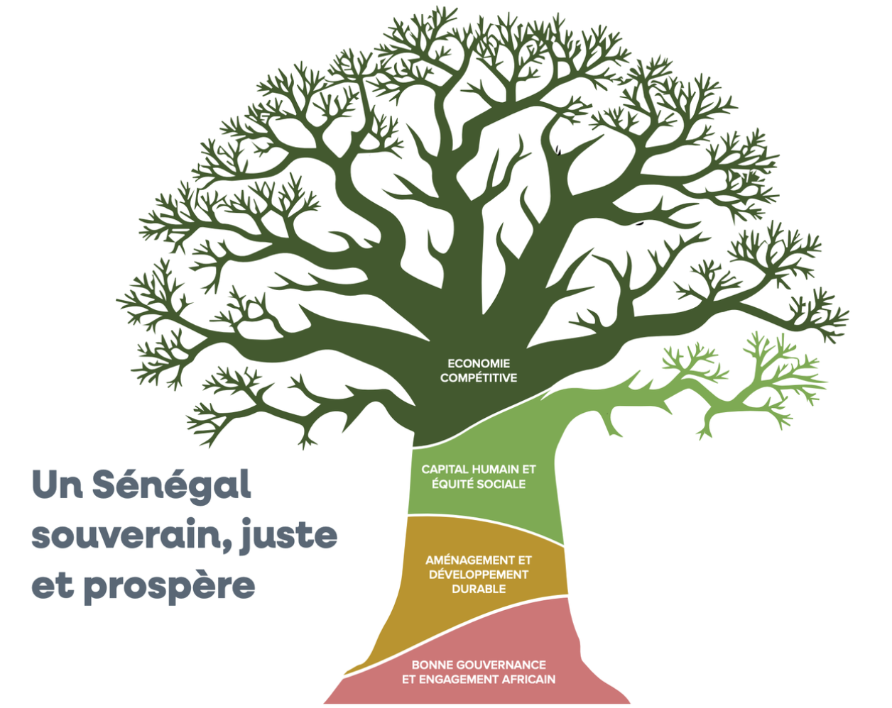

On October 14, 2024, Bassirou Diomaye Faye, the President of the Republic of Senegal, presented Vision Sénégal 2050, an ambitious development plan designed to guarantee the country's economic independence, social justice, and sustainable prosperity.
It focuses on the emergence of a digital society and creating a competitive economy, supported by modern infrastructures and a stable macroeconomic framework. One of the key objectives is to reduce economic concentration in Dakar by developing eight new economic hubs across the country.
